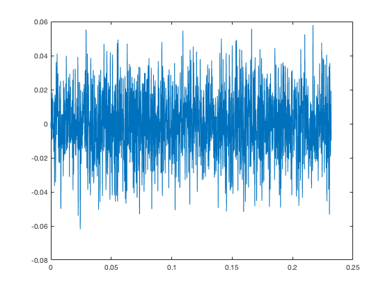
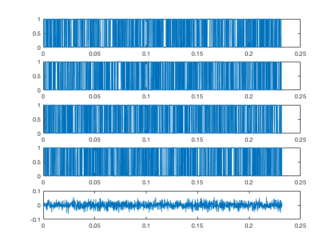
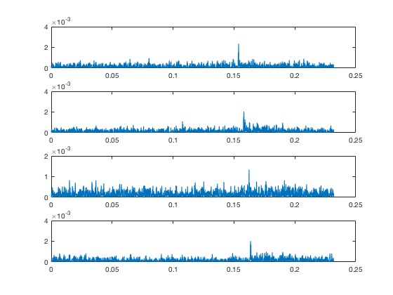
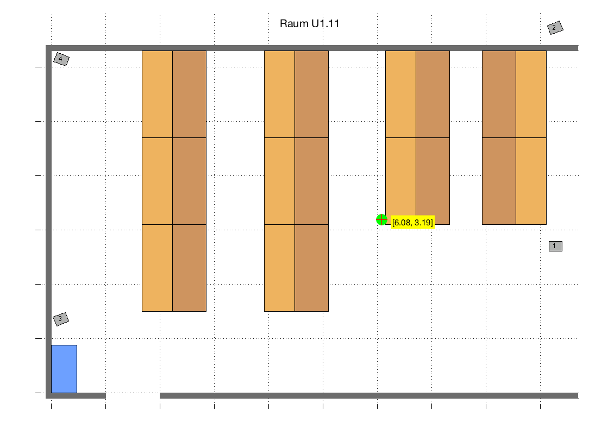

function gpsdemo4()
posS1 = [9.19, 2.82];
posS2 = [9.12, 6.63];
posS3 = [0.30, 1.39];
posS4 = [0.30, 6.11];
c_s = 343;
x0 = 5;
y0 = 3;
t_shift = 0;
pos = [x0;
y0;
t_shift];
[x, Fs] = audioread('Testaufnahme1.wav');
N = length(x);
time = (0:N-1)/Fs;
sendeSignal = laengeAnpassen(N);
c1 = KF(x,sendeSignal(:,1));
c2 = KF(x,sendeSignal(:,2));
c3 = KF(x,sendeSignal(:,3));
c4 = KF(x,sendeSignal(:,4));
plotFigures(N,time,sendeSignal,x, c1, c2, c3, c4);
[max1,index1] = max(c1);
time_peak1 = time(index1);
[max2,index2] = max(c2);
time_peak2 = time(index2);
[max3,index3] = max(c3);
time_peak3 = time(index3);
[max4,index4] = max(c4);
time_peak4 = time(index4);
P_1 = c_s * time_peak1;
P_2 = c_s * time_peak2;
P_3 = c_s * time_peak3;
P_4 = c_s * time_peak4;
for i=1:10
L1 = sqrt((posS1(1)-pos(1))^2 + ((posS1(2)-pos(2))^2));
L2 = sqrt((posS2(1)-pos(1))^2 + ((posS2(2)-pos(2))^2));
L3 = sqrt((posS3(1)-pos(1))^2 + ((posS3(2)-pos(2))^2));
L4 = sqrt((posS4(1)-pos(1))^2 + ((posS4(2)-pos(2))^2));
A = [(pos(1)-posS1(1))/L1 (pos(2)-posS1(2))/L1 c_s;
(pos(1)-posS2(1))/L2 (pos(2)-posS2(2))/L2 c_s;
(pos(1)-posS3(1))/L3 (pos(2)-posS3(2))/L3 c_s;
(pos(1)-posS4(1))/L4 (pos(2)-posS4(2))/L4 c_s];
P_V = [P_1 - L1;
P_2 - L2;
P_3 - L3;
P_4 - L4];
dV = A\P_V;
pos(1)= pos(1) + dV(1);
pos(2)= pos(2) + dV(2);
pos(3) = dV(3);
end
Karte(pos(1:2,1));
end
   